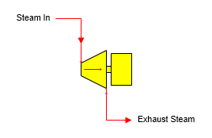

Turbo Alternator A turbo alternator station is used to simulate the generation of electrical power from the loss of pressure and temperature that occurs in a steam flow as it passes through a turbo alternator.

General Features The drop in steam pressure and temperature is representative of the energy removed from the steam as it passes through the turbo alternator. Water/vapor phase changes can occur in the turbo alternator station. The steam input flow will be required if a power output is specified, or if the output flow is required by another station. Pressure feedback can be passed through the station if pressure drop is specified.